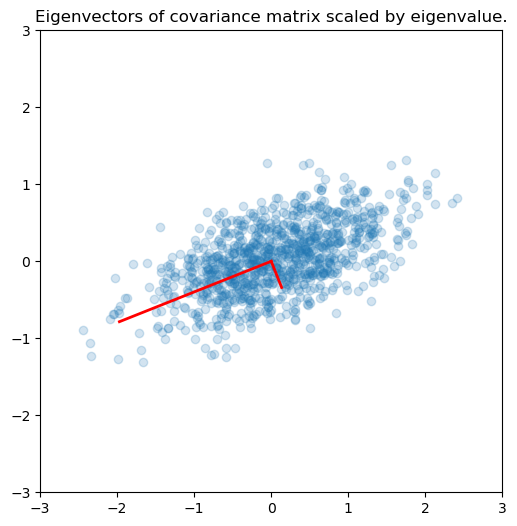
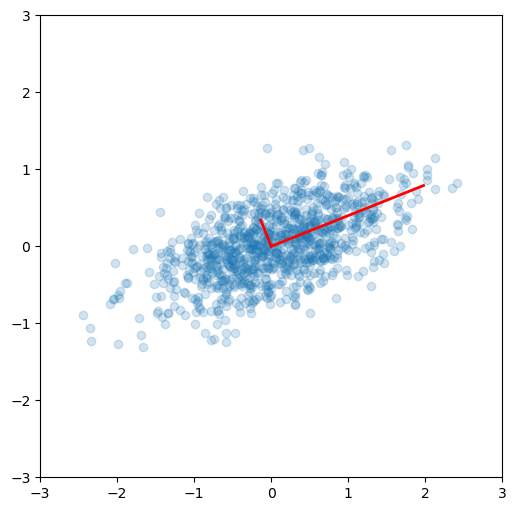
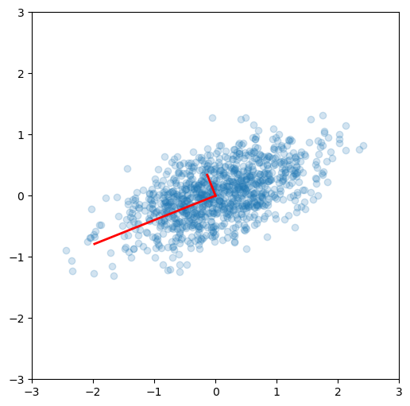

33.2. Principle Component Analysis (PCA)#
PCA belongs to a general class of methods that perform “dimensionality reduction” on data, where data is defined broadly. This can be thought of as reducing redundancy in characterizing the data. In the context of reduced basis emulators, the “proper orthogonal decomposition” or POD approach is closely analogous to PCA. SVD is a key tool in both PCA and POD methods.
Covariance, PCA and SVD#
Recall the formula for covariance
where \(\text{Cov}(X, X)\) is the sample variance of \(X\).
Eigendecomposition of the covariance#
Here we identify the principle axes of the covariance matrix, which are identified by the eigenvectors (here scaled by the eigenvalues). The matrix is for a zero-mean bivariate normal distribution with random sampling.

PCA#
“Principal Components Analysis” (PCA) basically means to find and rank all the eigenvalues and eigenvectors of a covariance matrix. This is useful because high-dimensional data (with \(p\) features) may have nearly all their variation in a small number of dimensions \(k < p\), i.e. in the subspace spanned by the eigenvectors of the covariance matrix that have the \(k\) largest eigenvalues. If we project the original data into this subspace, we can have a dimension reduction (from \(p\) to \(k\)) with hopefully little loss of information.
Numerically, PCA is typically done using SVD on the data matrix rather than eigendecomposition on the covariance matrix. Numerically, the condition number for working with the covariance matrix directly is the square of the condition number using SVD, so SVD minimizes errors.
For zero-centered vectors,
and so the covariance matrix for a data set \(X\) that has zero mean in each feature vector is just \(XX^T/(n-1)\).
In other words, we can also get the eigendecomposition of the covariance matrix from the positive semi-definite matrix \(XX^T\).
Principal components#
Principal components are simply the eigenvectors of the covariance matrix used as basis vectors. Each of the original data points is expressed as a linear combination of the principal components, giving rise to a new set of coordinates. The previous result should be reproduced here.

Using SVD for PCA#
As described in Section 33.1, SVD is a decomposition of the data matrix \(X = U S V^T\) where \(U\) and \(V\) are orthogonal matrices and \(S\) is a diagonal matrix.
Recall that the transpose of an orthogonal matrix is also its inverse, so if we multiply on the right by \(X^T\), we get the following simplification
Compare with the eigendecomposition of a matrix \(A = W \Lambda W^{-1}\), we see that SVD gives us the eigendecomposition of the matrix \(XX^T\), which as we have just seen, is basically a scaled version of the covariance for a data matrix with zero mean, with the eigenvectors given by \(U\) and eigenvalues by \(S^2\) (scaled by \(n-1\)).
u, s, v = np.linalg.svd(x)
# reproduce previous results yet again!
e2 = s**2/(n-1)
v2 = u
fig = plt.figure(figsize=(6,6))
ax = fig.add_subplot(1,1,1)
ax.scatter(x[0,:], x[1,:], alpha=0.2)
for e_, v_ in zip(e2, v2):
ax.plot([0, 3*e_*v_[0]], [0, 3*e_*v_[1]], 'r-', lw=2)
ax.axis([-3,3,-3,3]);
ax.set_aspect(1)
